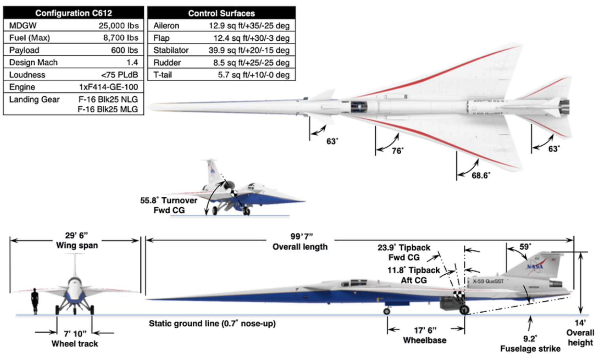

Commercial low-boom supersonic jets
In 2024 NASA will fly their X-59 Quiet Supersonic Transport demonstrator aircraft and collect critical noise data they plan to use to appeal and overturn the FAA’s overland ban on supersonic travel. This will open up lucrative high-volume transcontinental routes for supersonic jets designed with low-boom aerodynamic principles.
To learn more about the physics of sonic booms, aerodynamic design guidelines to minimize it, and the commercial supersonic aircraft manufacturer market, check out the following blog post, High-Speed Flight: Commercial Supersonic Flight Challenges and Opportunities.
